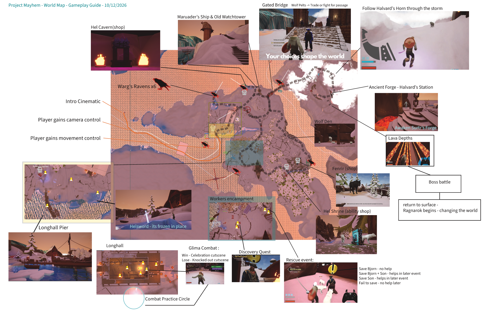

Arrive somewhere real
The boat reaches Longhall Pier. The player gets control gradually, sees the settlement, and can start making their own way through it.
A compact Viking-fantasy gameplay space organized around a guided arrival, optional exploration, social choices, and a major world-state escalation at the ancient forge.
You arrive by boat with only a little information and a whole settlement to wander through. The important places are visible, but the player decides which thread to pull first.

The route forward is never just a marker on a map. It is a collection of people, places, and small mysteries that make the player curious about what is happening in this frozen settlement.
The boat reaches Longhall Pier. The player gets control gradually, sees the settlement, and can start making their own way through it.
A strange sword in the snow, a fisherman, ravens overhead, a ship on the ridge, workers in trouble — each offers a different reason to wander.
A fight in the Longhall and a confrontation at the bridge give the player different ways through. What they choose can come back later.
Everything eventually points toward Halvard's ancient forge. Why was it built? Why was it sealed? And what happens when it burns again?
The player starts with freedom. Each discovery narrows the story until the forge becomes impossible to ignore.
The demo doesn't need to explain everything. The forge burns, the ice begins to break, and something ancient stirs beneath it. The player returns toward home as the first signs of Ragnarok appear — leaving the larger story hanging in the air.